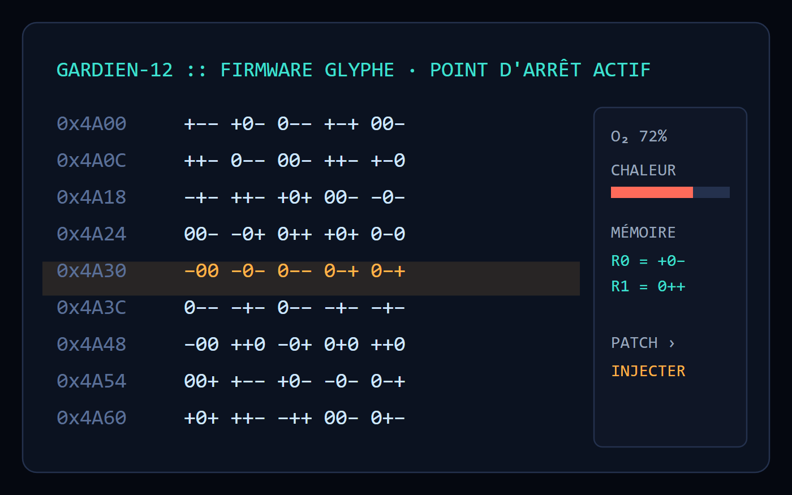
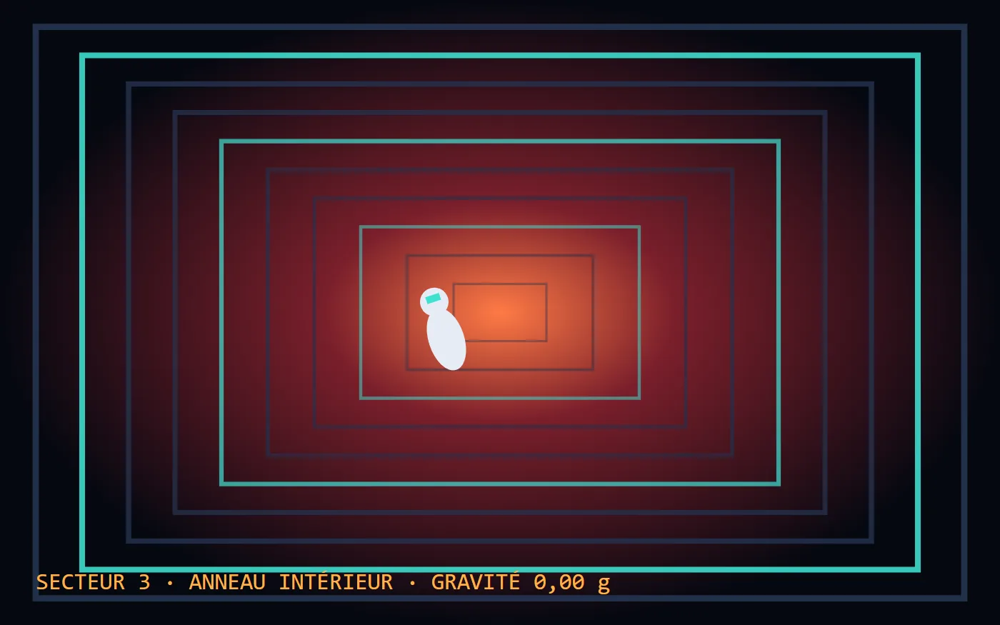
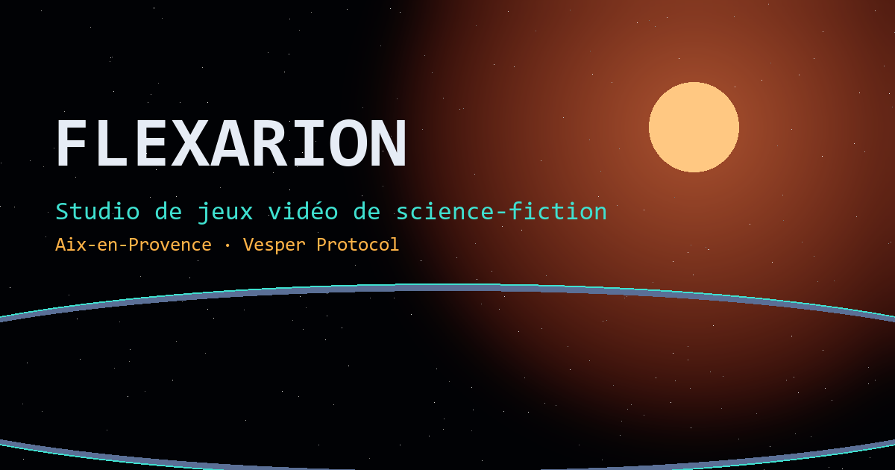

Kit presse
Presskit Flexarion : fiche, visuels et vidéo de Vesper Protocol
Tout ce qu'il faut pour parler du studio Flexarion et de son jeu Vesper Protocol : fiche d'identité, textes prêts à reprendre, visuels et vidéo à télécharger, et un contact presse.
Fiche d'identité
| Studio | Flexarion (studio fictif) |
|---|---|
| Fondation | 2023 |
| Localisation | Aix-en-Provence (13100), France |
| Équipe | 3 personnes : Léa Marchetti, Yanis Belkacem, Camille Roux |
| Jeu | Vesper Protocol |
| Genre | Exploration, puzzle, hacking — hard science-fiction |
| Plateformes | PC (Windows, Linux) |
| Mode de jeu | Solo |
| Sortie | Accès anticipé prévu en 2027 · démo gratuite disponible |
| Modèle économique | Jeu premium (prix non annoncé), démo gratuite |
| Langues | Français, anglais |
| Site | flexarion.eu |
| Démo | Vesper Protocol sur itch.io |
| Réseaux | Instagram · TikTok · YouTube · GitHub |
Descriptions
Description courte
Vesper Protocol est un jeu d'exploration spatiale et de hacking développé par Flexarion, studio indépendant d'Aix-en-Provence. Le joueur pirate les systèmes embarqués d'une mégastructure alien en orbite autour d'une étoile mourante, en apprenant une logique à trois états.
Description longue
Année 2231. Autour de Tau-Héliade, une naine rouge instable à onze années-lumière de la Terre, tourne la Vesper : un anneau de quatre cents kilomètres bâti par une civilisation disparue. Ses automates, les Gardiens, entretiennent toujours des systèmes dont personne ne comprend le but. Quand l'étoile commence à s'effondrer, la Vesper se met à émettre un signal.
Dans Vesper Protocol, le joueur incarne Ilya Sorel, auditrice de systèmes critiques à bord de la station de relais Ancre-7. Il dérive en apesanteur dans la structure en surveillant son oxygène et sa chaleur, branche sa console sur les portes et les machines, pose des points d'arrêt, lit la mémoire et injecte des correctifs écrits en logique ternaire. Pas de mini-jeu de réflexe : on progresse en comprenant le code.
Les Gardiens mémorisent les failles que le joueur réutilise et finissent par les corriger, ce qui oblige à varier ses approches. Chaque système piraté peut être réparé ou pillé, et ces choix mènent à l'une des quatre fins.
Historique
Flexarion naît d'une game jam de 48 heures à Aix-en-Provence, en mars 2023, sur le thème « signal perdu ». L'équipe y transforme le déchiffrage d'un vrai firmware de récupération en mécanique de jeu. Léa Marchetti, Yanis Belkacem et Camille Roux fondent le studio à l'automne 2023 ; le prototype devient Vesper Protocol, dont la production est racontée dans le devlog.
Points forts du jeu
- Exploration en apesanteur : poussées, points d'ancrage et gestion de l'oxygène et de la chaleur.
- Hacking par rétro-ingénierie : points d'arrêt, lecture mémoire et patchs, sans mini-jeu de réflexe.
- Une logique ternaire alien : trois états (−1, 0, +1) appris pas à pas, jusqu'à écrire ses propres routines.
- Des Gardiens qui apprennent : une mémoire d'exploits partagée qui corrige les failles trop utilisées.
- Réparer ou piller : chaque choix modifie la Vesper et mène à l'une des quatre fins.
- Hard SF crédible : physique orbitale, thermique et vraies classes de vulnérabilités informatiques.
Vidéo
La bande-annonce de la démo (63 s, vrai gameplay de la version 0.5.0, 1920 × 1080) se regarde et se télécharge sur sa page. Voici aussi la vidéo de présentation du studio et du jeu (format vertical, 31 secondes, voix off de synthèse).
Transcription de la vidéo
Un jeu vidéo où tu ne tires pas sur les aliens. Tu pirates leur code. Voici Flexarion, un studio de jeux vidéo de science-fiction, à Aix-en-Provence. Notre site est en ligne. Le studio, le jeu, les coulisses : tout est dedans. Vesper Protocol, notre jeu de hacking spatial. Une mégastructure alien à pirater, avant que son étoile meure. Dans le devlog, on te montre tout. Notre ciel est passé de neuf à deux millisecondes. Et la bêta fermée… est ouverte. Tape Flexarion sur Google, ou clique sur le lien en bio. Et dis-moi en commentaire : tu tires… ou tu pirates ?
Captures et visuels
Cliquez sur un lien pour télécharger le fichier en pleine résolution.









Logos


Fonds d'écran, glyphes et mémo imprimable : voir les ressources gratuites.
Conditions d'utilisation
Le key art, les captures, la bannière et la vidéo sont sous licence CC BY-NC 4.0 : vous pouvez les reprendre dans un article, une vidéo ou un dossier en créditant « Flexarion (studio fictif, projet pédagogique BUT Informatique) ». Le logo peut être utilisé sans modification pour parler du studio. Détails dans les mentions légales.
Récompenses et articles de presse
Aucun pour l'instant. Le studio étant fictif, nous ne citons ni récompense ni parution qui n'existe pas.
Équipe et crédits
| Léa Marchetti | Direction créative & game design (personnage fictif) |
|---|---|
| Yanis Belkacem | Programmation moteur & rendu (personnage fictif) |
| Camille Roux | Systèmes embarqués & design du hacking (personnage fictif) |
| Site et projet réel | Adam MANKAI, Gabriel GOUIN et Mattéo YANNI, étudiants en BUT Informatique |
Contact presse
Pour une interview, un visuel supplémentaire ou une question, écrivez-nous via le formulaire de contact en choisissant l'objet « Demande presse / interview ». Nous répondons à chaque message.
Pour aller plus loin : l'histoire du studio, la page du jeu et le devlog.